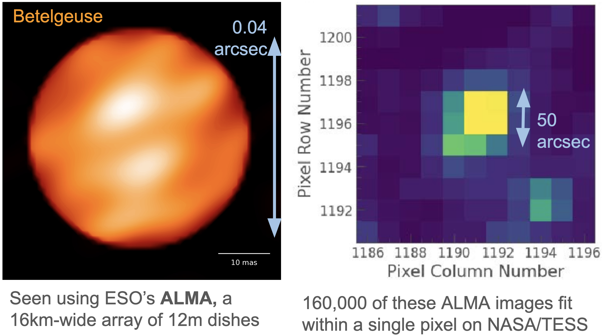
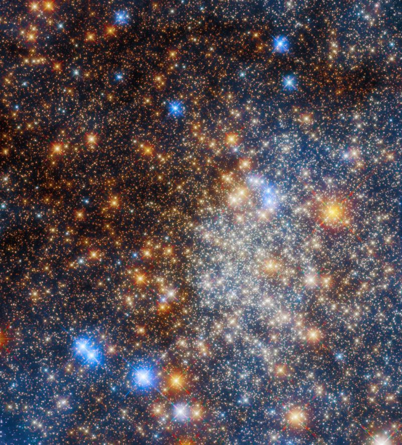
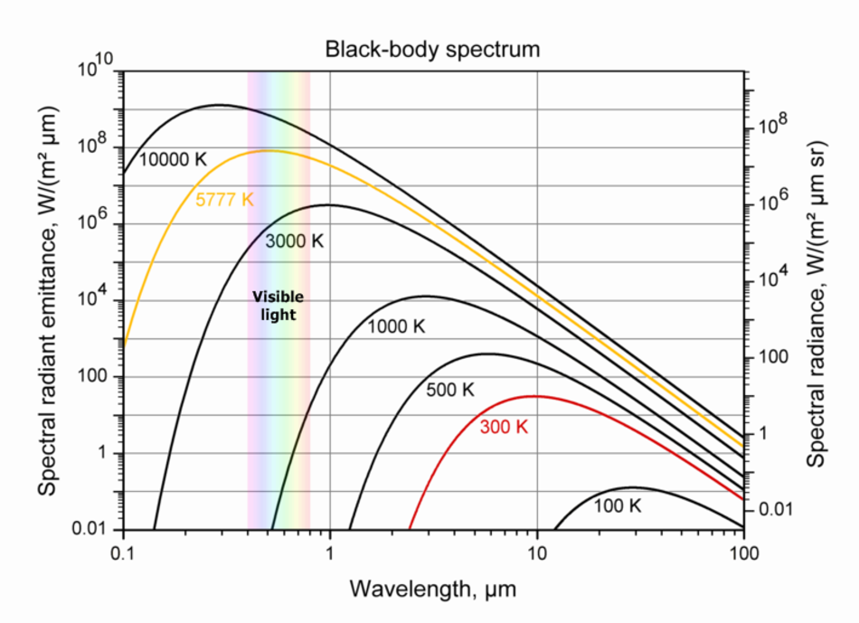
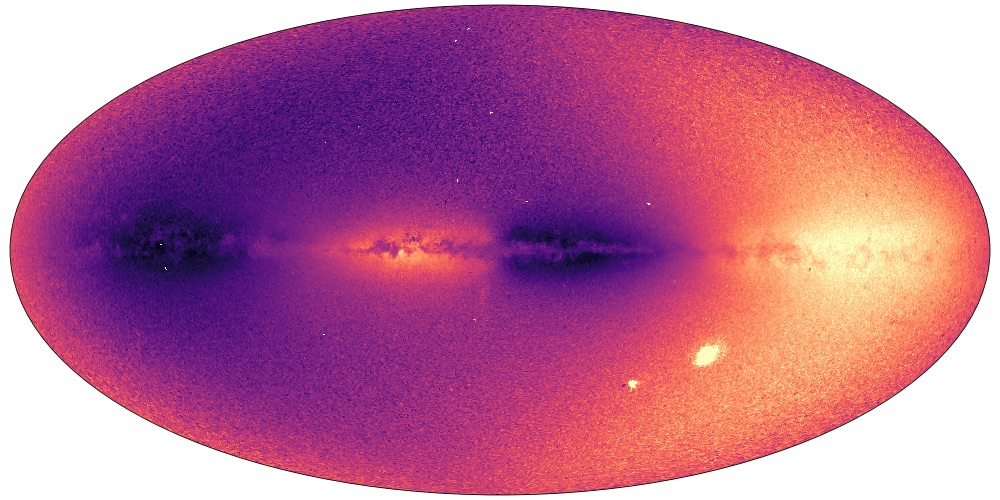
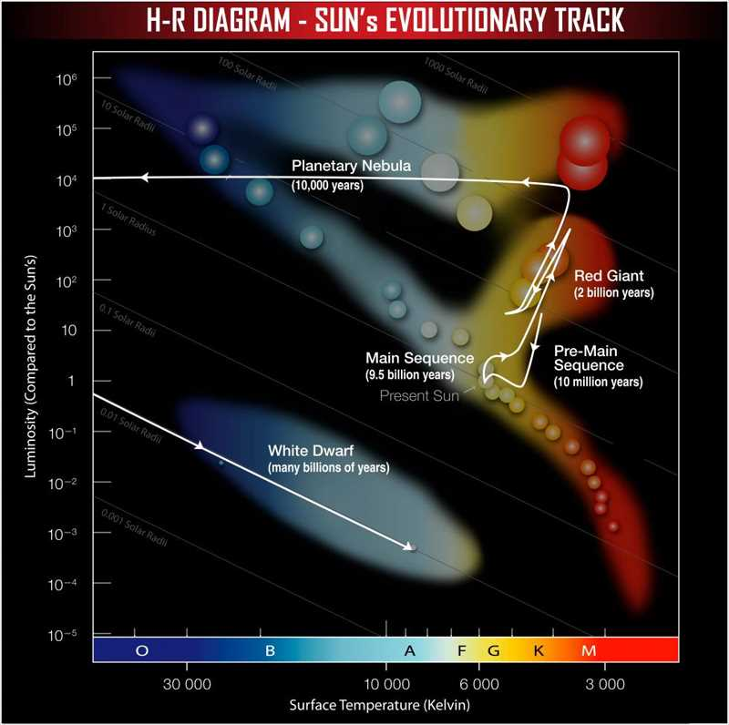
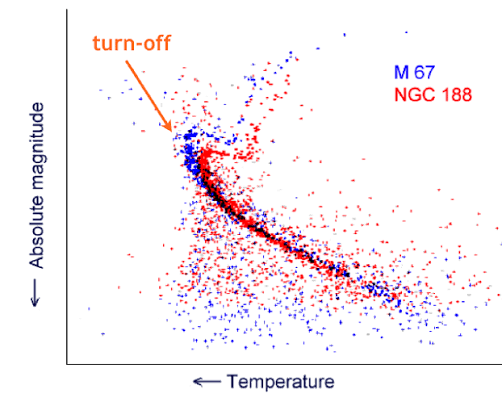
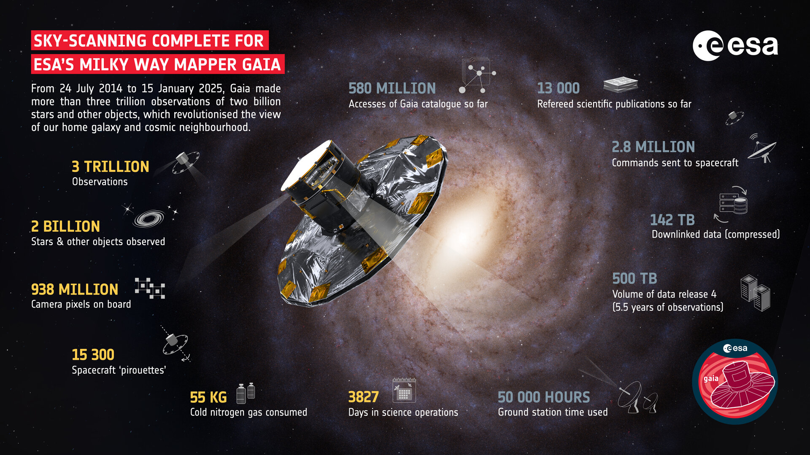
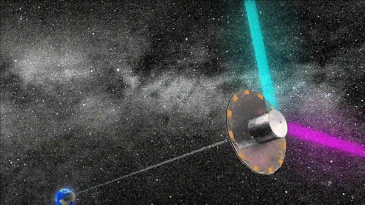
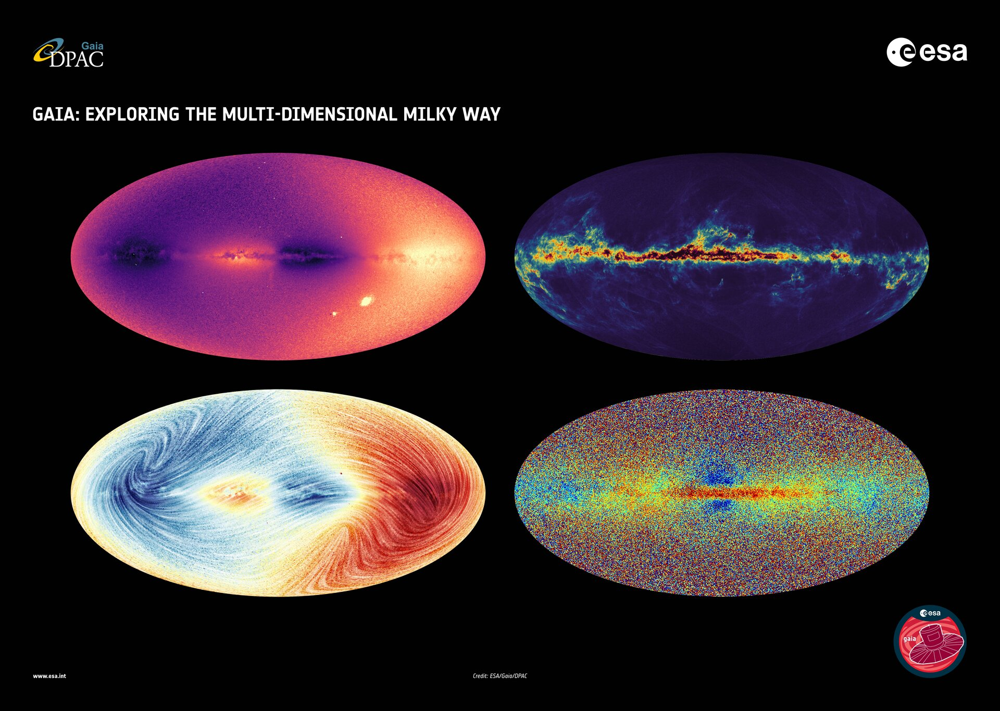
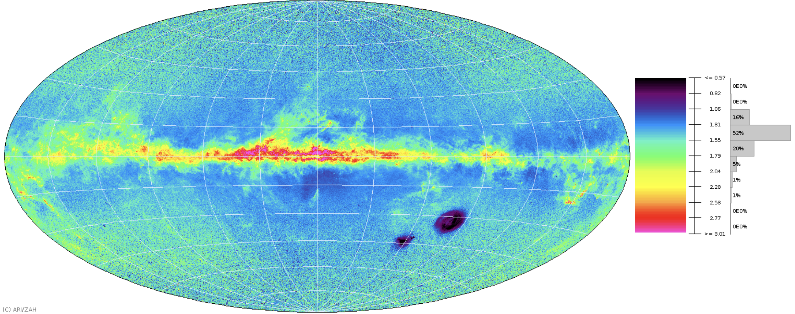

### The fundament problem: 99.9999% of stars in our galaxy cannot be resolved by human telescopes <span class="fragment">We must learn about them **using their light alone**.</span> -v- <p></p> --- # Q: What can we measure about a star? -v- ## Brightness <span class="fragment">Survey telescopes can measure the apparent brightness of all stars in the sky.</span> <span class="fragment">Typically we use a log relative magnitude scale defined by the star _Vega_ ($m_{\rm Vega}=0.0$).</span> <span class="fragment">Faint stars have higher magnitudes (e.g. $m_{{\rm proxima, V}} = 11.13$)</span> -v- ## Colours <span class="fragment">Measurements in different filters (e.g. B & V) produce colours</span> <span class="fragment">e.g. $ \left( B - V \right) \_{\rm Vega} = 0.0 $ ; $ \left(\rm{B}-\rm{V}\right) \ _{\rm Proxima}=1.82 $</span> -v- ## Magnitudes The apparent magnitude of a given stars is determined by : 1) <span class="fragment">*Intrinsic luminosity*</span> - <span class="fragment">Often encapsulated as an "Absolute Magnitude"</span> - <span class="fragment">This is the magnitude a star would have at a distance of 10pc</span> 2) <span class="fragment">*Distance from us*</span> - <span class="fragment">The inverse square law of light reduces flux</span> <span class="fragment">Two stars could appear the same brightness but be orders of magnitude apart in luminosity & distance.</span> -v- #### Colour - reddening <p></p> - <span class="fragment">The colour we observe may not always match the _intrinsic_ colour.</span> --- ## Distance <span class="fragment">Close one eye; hold out thumb and place over target; switch eyes: **parallax**</span> -v- ## Distance <span class="fragment">Parallax is defined as the observed angular displaced of a star from the 1AU displacement of Earth.</span> <span class="fragment">If we measure some displacement angle $\pi$ relative to (more or less fixed) background stars, then what is the distance to the star?</span> <span class="fragment">$\tan{\pi} = 1{\rm au}/d$</span> <span class="fragment">Given that angles are small ($\tan{\theta} \approx \theta$ in radians) and the parsec is defined as the distance which causes a 1 arcsec displacement:</span> <span class="fragment">$ \pi/\rm{arcsec} = \rm{pc}/d $</span> <span class="fragment"><div class="question-box">What is the parallax of a star at the galactic core (8000 pc)?</span></div> --- ## Motion Measuring a star's position precisely over many years may also reveal a star's real movement too - its **proper motion**. <span class="fragment"><img src="../slide_data/slide_images/barnards-star-barnard's-star-1479068645.gif" class="r-stretch"></span> <span class="fragment">Combined with distance & radial velocity (e.g. from spectroscopy), we get a stars position in 6 dimensions (3D position + 3D motion).</span> --- ## Surface temperature Stellar colours are most fundamentally related to stellar surface (or _effective_) temperature (e.g. Wien's law): <p></p> -v- ## Luminosity <p></p> If a star has distance $d$ and magnitude $m_V$, we can estimate its luminosity. <span frame="fragment">1) Get a filter-specific absolute magnitude using the "distance modulus": <span class="fragment">$$m_V - M_V = 5 \log_{10}{d} - 5 \qquad \rm{ or } \quad M_V = m_V-5\log_{10}{d}+5$$</span></span> <span class="fragment"><span frame="fragment">However, luminosity is _bolometric_ (i.e. summed across all wavelengths), so we have to adjust using a **bolometric correction**.</span></span> <span class="fragment"><span frame="fragment">$$M_{\rm bol} = m_V-5\log_{10}{d} + 5 + BC$$</span></span> <span class="fragment"><span frame="fragment">This changes as a function of temperature (blue & red stars require higher corrections as they radiate less in the V band than the Sun)</span></span> -v- ## Luminosity <span class="fragment"><span frame="fragment">We can use the fact that the magnitude scale is _base 2.5_ to calculate the relative difference in luminosity between a star and the Sun (Which has $M_{\rm{bol},\odot} = 4.74$).</span></span> <span class="fragment"><span frame="fragment">$$L = L_\odot 10^{0.4\left(M_{\rm{bol},\odot} - M_{\rm{bol}}\right)} \\quad \rm{or} \quad \log_{10}{\left(\frac{L}{L_\odot}\right)} = 0.4(M_{\rm{bol},\odot} - M_{\rm{bol}})$$</span></span> -v- ## Stellar radius Given the Stephan-Boltzmann law of black body radiation: <span class="fragment">$$L = 4\pi R_s^2 \sigma T^4$$</span> <span class="fragment">We can rearrange for R, such that:</span> <span class="fragment">$$R_s = \sqrt{\frac{L}{4\pi \sigma T^4}}$$</span> <span class="fragment">Hence, with an established distance, magnitude and temperature we can estimate a stellar radius.</span> --- ## Other quantities: <span class="fragment"><span frame="fragment">**Surface gravity** can be estimated via absorption line width in spectra</span></span> <span class="fragment"><span frame="fragment"> **Stellar mass** is typically the least well-established physical quantity:</span></span> - <span class="fragment"><span frame="fragment">Can be calculated from radius \& gravity</span></span> - <span class="fragment"><span frame="fragment">Often best constraints from stellar evolution models</span></span> <span class="fragment"><span frame="fragment">**Age** is very difficult to determine. Possibilities:</span></span> - <span class="fragment"><span frame="fragment">Stellar rotation speed (Gyrochronology - older stars rotate slower)</span></span> - <span class="fragment"><span frame="fragment">Asteroseismology (vibration probes interior structure)</span></span> - <span class="fragment"><span frame="fragment">Stellar evolution models (stars change with time, e.g. density)</span></span> --- # Stellar evolution <span class="fragment"><span frame="fragment">Shared by all stars:</span></span> <span class="fragment"><span frame="fragment">1) Collapse from nebula</span></span> <span class="fragment"><span frame="fragment">2) Begin nuclear fusion of hydrogen, forming stable energy source during **Main Sequence** phase</span></span> <span class="fragment"><span frame="fragment">3) Deplete hydrogen fuel...</span></span> <span class="fragment"><span frame="fragment">The _duration_ of these stages (and the post-main sequence evolution) is wildly different</span></span> -v- <img src="https://chandra.si.edu/graphics/xray_sources/stellar_fate.jpg" class="r-stretch"> -v- <p></p> -v- ### Stellar lifetimes Stellar luminosity is proportional to mass, where: <span class="fragment">$$\left(\frac{L}{L_\odot}\right) = \left(\frac{M}{M_\odot}\right)^\alpha \qquad \rm{where} \quad 3.5 < \alpha < 4$$</span> <span class="fragment"><div class="question-box">What does this equation imply for the lifetime of stars?</span></div> <span class="fragment">Luminosity is the rate that stars convert mass to energy, so larger stars burn through their hydrogen much faster.</span> <span class="fragment">$$\left(\frac{M}{M_\odot}\right) / \left(\frac{L}{L_\odot}\right) \approx \left(\frac{\tau}{\tau_\odot}\right) \qquad \rm{ or } \quad \left(\frac{\tau}{\tau_\odot}\right) \approx \left(\frac{M}{M_\odot}\right)^{1-\alpha} $$</span> -v- <p></p> For a stellar population of the same age the impact of stellar evolution is clear. --- <p></p> -v- # The Gaia satellite - <span class="fragment">DR3 (2023) contains information for 1.5 billion stars:</span> - <span class="fragment">Precise magnitudes (2 colours <0.1 precision)</span> - <span class="fragment">Positions (down to ~10 micro arcsec precision)</span> - <span class="fragment">Proper motion</span> - <span class="fragment">Parallaxes (out to many kpc)</span> - <span class="fragment">RVs & stellar properties from spectra</span> -v- # The Gaia satellite - <span class="fragment">Resulted in fundamental improvements in stellar characterisation</span> - <span class="fragment">Revealed the galaxy in 6D, finding new stellar populations</span> - <span class="fragment">DR4 (Dec 2026) will find thousands of new planets via astrometry</span> -v- #### Gaia - How? - <span class="fragment">Simultaneous view of stars ~100° apart = precise relative astrometry</span> - <span class="fragment">Constantly scanning the sky to build up maps over time</span> <p></p> -v- <p></p> -v- ### RVs -v- [3D map of milky way structures](https://faun.rc.fas.harvard.edu/czucker/Paper_Figures/Milky_Way_Mapping_Lorentz.html) -v- #### Gaia - How? <p></p> - $>1$TB of data stored on ESA Gaia archive. - Accessed via ADQL queries (online database, or astroquery) - Frequent downtime due to implementing DR4... -v- #### Let's play with some Gaia data! What we want to learn: - Querying databased with astroquery (NB - it can be slow). - Using astronomical software like astropy - Manipulating large databases and extracting useful information - Plotting/visualising data - Researching & comparing to some real-world research -v- # Let's play with some Gaia data. -v- # Some Ideas First steps are detailed in `all_code/Week2_3_GaiaStars/Inspect_gaia_example.py` <span class="fragment">The others are simply examples - pick and choose the most interesting!</span> <span class="fragment">\+ Your own ideas are more than welcome</span> <span class="fragment">\+ Try to delve into the literature and find something interesting to chase</span> -v- 1) <span class="fragment">What does a volume-limited sample of stars look like?</span> - <span class="fragment">Query Gaia using a simple threshold in distance/parallax</span> - <span class="fragment">Explore the colours/parameters/etc of this sample</span> - <span class="fragment">How frequent are the various types/masses of stars (does it match the IMF/initial mass function)</span> - <span class="fragment">Cross-match with other data (e.g. 2MASS IR colours, X-ray measurements, exoplanet archive, etc)</span> -v- 2) How do sunlike (e.g. G, F & A) stars near our Sun move? - Create some function to separate sunlike stars (abs. mag, colour, etc?) - Query Gaia using this - Calculate the 3D space motion (e.g. from proper motion, radial velocity & distance) -v- 3) How are blue giants (e.g. O & B stars) distributed through the galaxy? Is it different from red giants? - Create some function to separate red & blue giants stars (abs. mag, colour, etc?) - Calculate the 2D and 3D locations of each (e.g. as a function of galactic coordinates) - (Potentially apply dust maps to get true colours) -v- 4) What does a constrained population of stars (e.g. open or globular cluster) look like? - [Open examples](https://en.wikipedia.org/wiki/List_of_open_clusters): Hyades, Plieadesm, Beehive cluster, etc. - [Globular examples](https://en.wikipedia.org/wiki/List_of_globular_clusters): M67, NGC 752, NGC 6544, NGC 6397 - How do the population of stars differ? Open question - *Can you estimate the age of clusters from the MS turn-off*? - Assess which stars are part of the main sequence - Estimate main sequence lifetime as a function of e.g. luminosity - Find largest/brightest main sequence star and determine its likely age. -v- 5) Can we find the fastest-velocity stars? - Calculate true velocity from projected/angular velocity and query Gaia - What types of stars are these? - Which way are they moving to (and from)? - What is the cause of their high speed? -v- #### Useful information: - Always check with a small sample first, and potentially select columns you want (quicker) - Queries to the `dr3_lite` catalogue (limited number of columns) are much quicker - [Astroquery Gaia module](https://astroquery.readthedocs.io/en/latest/gaia/gaia.html) - [Gaia archive](https://gea.esac.esa.int/archive/) -v- #### Useful information (cont.): - Fundamental parameters of [the main sequence](https://www.pas.rochester.edu/~emamajek/EEM_dwarf_UBVIJHK_colors_Teff.txt) - Gaia [DR3 column descriptions](https://irsa.ipac.caltech.edu/data/Gaia/dr3/gaia_dr3_source_colDescriptions.html) - Good quality flags for single stars: `parallax_over_error > 10`, `rv_nb_transits > 10`, `ruwe<1.4`, `duplicated_source = “FALSE”`, `non_single_star=0`. - [Sub-giant selection](https://iopscience.iop.org/article/10.3847/1538-4357/ad7c4e). -v- #### Avoiding lag: - Use the `lite` dr3 source catalogue - Select only `TOP N` files (especially to begin with) - Specify only certain columns for download